Директора школы 7
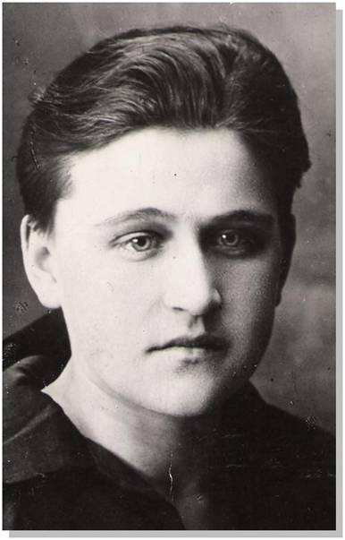
- Антонина Васильевна Цыкина 1935-1940
Первым директором школы была Цыкина Антонина Васильевна. Антонина Васильевна – строгий, требовательный педагог и руководитель. Одновременно работая директором школы, Антонина Васильевна училась – получала высшее образование. В дни своего отсутствия в школе – в приказах по школе – чётко расписывала функциональные обязанности каждого члена педагогического коллектива. За опоздание на урок всего на 1-2 минуты учитель мог быть сурово наказан. Дисциплина в школе при Антонине Васильевне были идеальной.
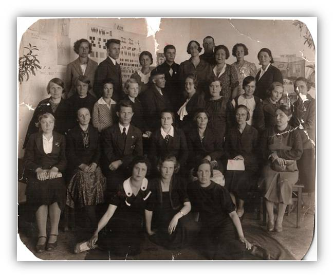
- Н.С.Коростылев 1940-1943
Великая Отечественная война изменила жизнь школы. На фронт ушли педагоги школы № 7: директор Н.С.Коростылев, учитель математики И.А.Касс, учитель истории А.В.Силин. В 1943 Н.С.Коростылев погиб на фронте.
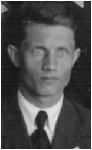
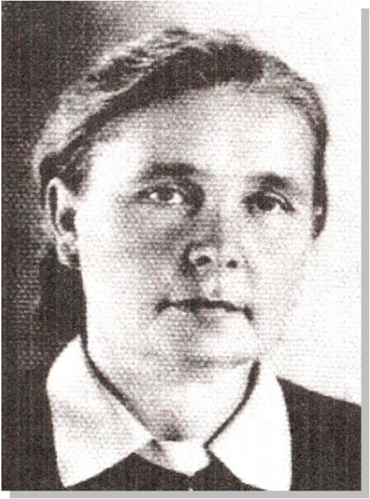
- Клавдия Ивановна Борейшо 1943 - 1961
Одним из ярких директоров нашей школы была Клавдия Ивановна Борейшо. Она руководила школой восемнадцать лет. Ей пришлось возглавлять педагогический коллектив в самые тяжелые дни – в годы Великой Отечественной войны, в трудные послевоенные пятидесятые. После войны желание получать образование было настолько велико, что все старались учится хорошо, несмотря на жизненные трудности. В школе открываются группы продленного дня с бесплатным содержанием детей. Все учащиеся начальных классов получают бесплатно молоко.
Клавдия Ивановна – строгий, требовательный руководитель, всегда старалась поддерживать своих коллег, проявляла заботу об учениках и условиях учебы. В то время в школе не было спортивного зала. Не раз Клавдия Ивановна обращалась в управление народного образования за разрешением пристроить к школе спортзал. Но ответ был неизменным – «сметой не предусмотрено». Учителя и родители понимали – в это трудное послевоенное время, когда в городе началось масштабное строительство жилья, детских учреждений – денег не хватало. Тогда на собрании педагогического коллектива и родительского комитета было принято решение построить спортивный зал собственными силами методом народной стройки. Клавдия Ивановна принимала участие в разработке проекта спортзала. В 1961 году началось строительство, в котором принимали участие и шефы с УВЗ, и родители, и учителя, и ученики. Это была действительно народная стройка. Фотоснимки из школьного музея показывают, как вручную перетаскивались кирпичи, цемент и другие стройматериалы по лесам — наверх. Когда спортзал был построен, состоялось веселое новоселье. В новом зале состоялся концерт для строителей, родителей и учителей.
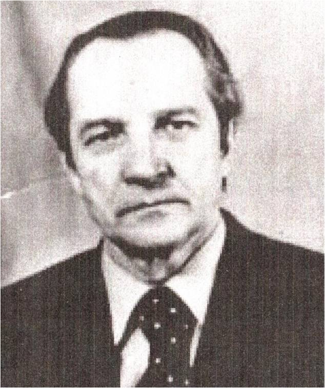
- Яков Антонович Хилькевич 1961-1983
В 1961 году директором школы стал Яков Антонович Хилькевич. Это человек трудной и интересной судьбы. Закончив в мае 1942 года Ульяновское танковое училище, Яков Антонович попал на Сталинградский фронт. Он бил врагов на своем танке до сентября 1944 года. Получив тяжелое ранение - попал в госпиталь, а после выздоровления служил в тыловых войсках. После войны Яков Антонович закончил заочно учительский институт, а в 1956 году - педагогический. С 1953 года по 1956 год Я. А. Хилькевич работает взаведующим районо. В 1956-1961 гг. Яков Антонович был директором школы № 55, а в 1961 году Я.А. Хилькевич возглавил школу № 7.
За двадцать два года Яков Антонович много сделал для школы. В этот период седьмая школа была известна, как одна из лучших школ района. Учащиеся школы № 7 занимали первые места в «Зарнице» и «Орленке», принимали активное участие в сборе урожая картофеля в Пригородном районе, дружили с шефами Уралвагонзавода, где учеников школы № 7 принимали в пионеры.
Яков Антонович был очень уважаемым человеком в районе.
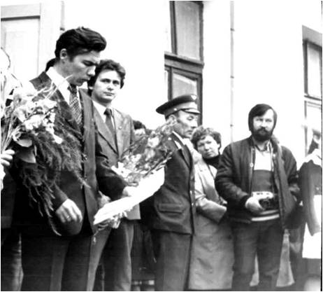
- Ефим Дмитриевич Ширинкин 1983-1985
С 1983 по 1985 год директором нашей школы был Ширинкин Ефим Дмитриевич. Ефим Дмитриевич организует работу группы «Поиск», является инициатором начала сбора материалов по истории школы.
В эти годы в школе была создана военно- спортивная команда, которая была постоянным победителем районных и городских соревнований игр « Зарница» и « Орлёнок».
Ефим Дмитриевич корректный, но в тоже время требовательный руководитель стремился к тому, чтобы школа № 7 была всегда впереди всех. Ефим Дмитриевич и сейчас продолжая работать в образовании, учителем информатики школы № 55 много занимается с детьми, никогда не отказывает в помощи своим коллегам, и нашей школе в том числе.
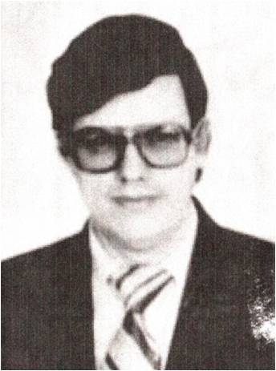
- Валерий Иванович Боженок 1985-1987
С 1985-1987 годы директором школы был Баженок Валерий Иванович. Валерий Иванович очень много делал для благоустройства школы. Именно при Валерии Ивановиче у школы появился железный забор, который позволил украсить и обозначить территорию школы.
Заполнился этот период ещё и тем, что выпуск 1985 года отличался хорошими и отличными результатами в учёбе – семь выпускников получили аттестаты только с отличными отметками.
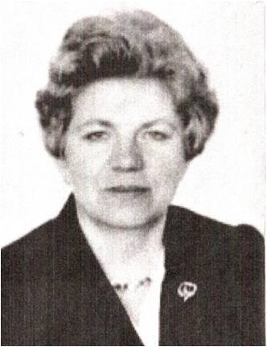
- Алла Михайловна Каргина 1987-1990
С 1987-1990 годы руководила школьным коллективом Каргина Алла Михайловна. Алла Михайловна была прекрасным хозяйственником. Школа преобразилась, похорошела. Алла Михайловна уделяла много внимания всем педагогам, а особенно молодым специалистам, неусыпно и систематически посещала уроки учителей. Не допускала к работе учителя, если у него не было конспекта урока.
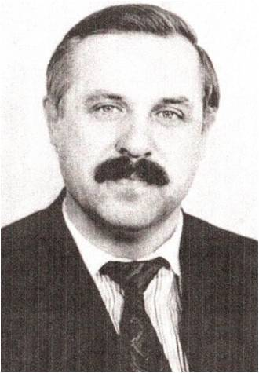
- Евгений Васильевич Нагнитный 1990-1991
В начале девяностых директором школы был Нагнитный Евгений Васильевич. Евгений Васильевич проработал в школе совсем немного, но педагогический коллектив всегда с особой теплотой вспоминает о нём.
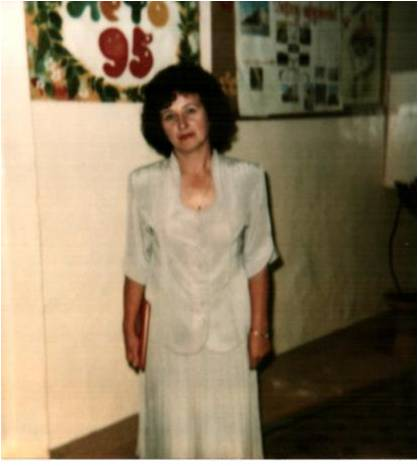
- Галина Николаевна Жидкова 1992-1997
В 1992 - 1997 год коллектив школы возглавляла Жидкова Галина Николаевна. Галина Николаевна как человек очень творческий много сделала по благоустройству школы. Именно в эти годы школу перестали красить в мрачные краски, появились на этажах и в кабинетах шторы, тюль.
В школе появились первые традиции: осенний и новогодний баллы, постановка новогодних сказок силами педагогического коллектива. Все инициативы и мероприятия по внеклассной работе Г.Н. поддерживались. Именно Галина Николаевна была инициатором проведения юбилея школы – школе было 60 лет.
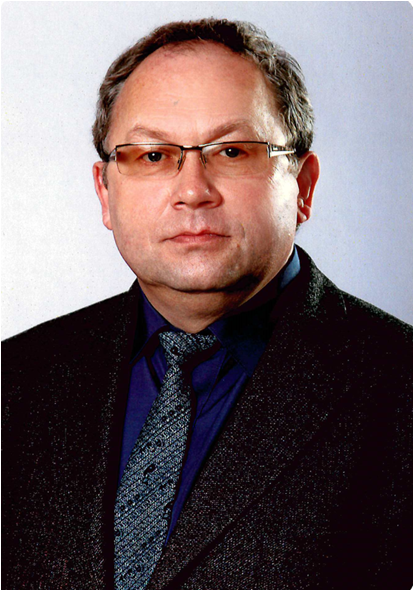
- Васильев Игорь Павлович 1997 - 2018
С 1997 года директором школы становится Васильев Игорь Павлович. Игорь Павлович молодой, инициативный руководитель. Приняв школу в ветхом состоянии, Игорь Павлович воодушевил учителей школы, поставив перед ними цель: создадим школу XXI века. Игорю Павловичу удалось убедить руководителей района и города в необходимости проведения капитального ремонта старейшей школы Вагонки, который длился 3,5 года.Все это время ученики седьмой школы занимались в здании школ № 70 и № 9 во вторую смену, а начальные классы размещались в квартальном клубе «Олимпия». Нелегко пришлось учителям. Во время ремонта учебный процесс не прерывался, учащиеся седьмой школы неоднократно становились победителями различных конкурсов, олимпиад, золотыми и серебряными медалистами.
Сегодня МОУ СОШ № 7 является новой школой, оснащенной хорошей учебной мебелью, современными техническими средствами обучения и учебными пособиями. Учителя, ученики, родители и гости школы с радостью заходят в светлые чистые аудитории, где есть место и современным стендам и цветам. В нашей школе применяются новейшие педагогические технологии и сохраняются лучшие традиции тагильского образования старейшей школы Вагонки.
На базе школы проходят городские и районные мероприятия, учителя школы постоянно повышают свой профессионализм, представляя свой опыт на городских педагогических конференциях. В школе создаётся музей. Среди педагогов школы – отличники народного просвещения, победители конкурса «Лучшие учителя России» в рамках национального проекта «Образование».
За значительные успехи в организации и совершенствовании образовательного и воспитательного процессов в свете современных достижений науки и культуры, формировании интеллектуального развития личности Васильев Игорь Павлович, руководитель МБОУ СОШ №7, награжден Почетной грамотой Министерства образования и науки Российской Федерации.
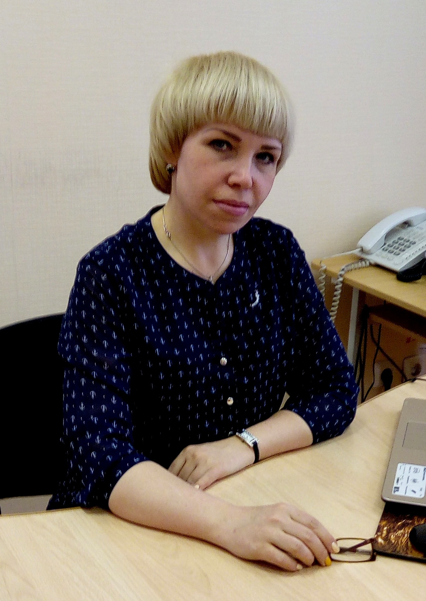
- Губанова Ирина Алексеевна с 2018г.
В апреле 2018 года директором школы становится Губанова Ирина Алексеевна.